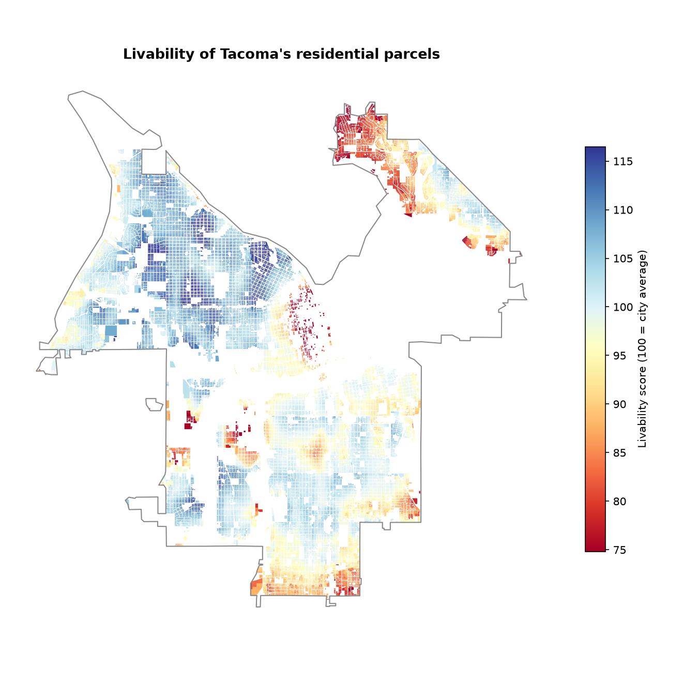
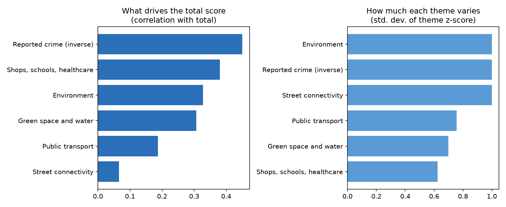

Here's a question I couldn't shake for a while: is my neighborhood actually good, or does it just feel that way because it's mine? Turns out, if you're willing to pull together enough real public data, you can actually answer that, block by block, not just with "this side of town is nicer." So that's exactly what I did, for every single real residential parcel in Tacoma. Not a sample. All 65,229 of them.
Why score literally every house?
Here's the thing about Tacoma: it's overwhelmingly a single-family city. Of the 65,229 real parcels the Pierce County Assessor classifies as residential within city limits, 55,027 (that's 84%) are single-family dwellings. So restricting an index like this to just apartments and condos, which would honestly be the easier dataset to work with, felt like it would describe a small and pretty unrepresentative slice of how Tacoma actually lives. Which kind of defeats the point. So instead, this scores every real residential parcel type: single-family, duplex/triplex/fourplex, and apartment/condo. (Mobile homes live on Pierce County's own separate parcel layer, so they're not covered here. That's a real gap, not a choice I'm hiding.)
So how does the scoring actually work?
Let's break it down. Each parcel gets scored on six real themes, all built from real public data. Then comes the part I actually think is the clever bit: each theme becomes a single z-score, direction-corrected so higher is always better, and the total score blends the average of those six z-scores with their minimum (70/30 weighting). Why bother with the minimum at all? Because otherwise, a parcel could be amazing on four themes and bad on two, and the average would paper right over it. Blending in the minimum means being excellent somewhere can't fully buy back being poor somewhere else. Then everything gets rescaled so the citywide mean lands exactly on 100.
| Theme | What it measures | Data source |
|---|---|---|
| Shops, schools, healthcare | Real walking-network distance to the nearest supermarket, school, preschool, pharmacy, healthcare facility, library, and sports facility | OpenStreetMap |
| Public transport | Walking-network distance to the nearest bus stop and, separately, to the nearest rail stop (Tacoma Link light rail or Sounder commuter rail) | Pierce Transit + Sound Transit GTFS |
| Green space and water | Walking-network distance to the nearest park of at least 1 hectare and to the nearest open water | Metro Parks Tacoma + OpenStreetMap |
| Street connectivity | Real intersection density (junctions per km²) in the walkable network around each parcel | OpenStreetMap road network |
| Environment | Local air-pollution burden percentile (PM2.5, ozone, diesel PM, NO2, traffic proximity) for the parcel's census tract | EPA EJSCREEN (archived) |
| Reported crime | Density of reported Person and Property crime incidents within roughly a five-minute walk, last 3 years | City of Tacoma Police Department |

Okay, so what actually drives the score?
This part surprised me a bit. Splitting the total back into its six components shows which real factors actually move the ranking, and, maybe more interestingly, which ones basically don't.

Let's look at each theme on its own

Let's actually go through each one properly: how it was built, and what the real numbers behind it show.
1. Shops, schools, healthcare
How it was built: seven real OpenStreetMap point layers: supermarket, school, preschool, pharmacy, healthcare, library, and sports facility. Every parcel gets its real walking-network distance (not straight-line) to the nearest point in each category, computed once per category via multi-source Dijkstra across the full Tacoma OSM walk graph (50,174 nodes, 146,642 edges), then the seven distances are each turned into a z-score and averaged.
Real locations found and their median walking distance: supermarket 33 (1,387 m) · school 116 (707 m) · preschool 11 (2,539 m) · pharmacy 22 (1,572 m) · healthcare 114 (1,462 m) · library 14 (1,724 m) · sports 60 (1,522 m)
What it shows: that preschool number jumped out at me. Only 11 citywide is almost certainly an OSM coverage gap, not a real scarcity of childcare (see the limitations below). Averaging seven sub-metrics together also does something statistically interesting: it's the most compressed theme of all six (standard deviation of its z-score is 0.625, versus 1.0 for the single-metric themes), because averaging cancels out some of each individual metric's noise. Even compressed, it's still the second-strongest driver of the total score (r = 0.38). Access to everyday errands really does separate neighborhoods here.
2. Public transport
How it was built: real walking distance to the nearest bus stop (every Pierce Transit stop, from their live GTFS feed) and, separately, to the nearest rail stop (filtered from Sound Transit's full regional GTFS feed down to just the two routes that actually serve Tacoma: Tacoma Link light rail and Sounder commuter rail). The two distances are z-scored and averaged.
1,974 real bus stops (median 313 m) · 38 real rail stops (median 3,547 m)
What it shows: that's more than a 10x gap between how close the median parcel is to a bus stop versus a rail stop. Tacoma's bus network actually reaches most neighborhoods, while light rail and commuter rail only serve a narrow corridor. Because decent bus access is so common citywide, this theme has the weakest correlation with the total score of any access theme (r = 0.19); it doesn't vary enough on its own to be what separates a strong block from a weak one.
3. Green space and water
How it was built: real walking distance to the nearest qualifying park (Metro Parks Tacoma's inventory, filtered to parks ≥ 2.47 acres, or 1 hectare, the WHO Europe minimum-usable-park-size threshold) and, separately, to the nearest open water (OSM). Both distances are z-scored and averaged.
64 real qualifying parks (median 999 m) · open water (median 1,258 m)
What it shows: most parcels sit under a kilometer from a real usable park, but water access is a bit more uneven, which isn't surprising in a city that's only partly on the waterfront. This theme lands mid-pack for both correlation (r = 0.31) and spread (std = 0.699): a real, meaningful contributor without being decisive on its own.
4. Street connectivity
How it was built: a real intersection-density calculation, not a distance. Every walk-network node with three or more connecting streets counts as a junction; for each parcel, this counts how many real junctions fall within a 400m radius of its centroid and converts that to junctions per km².
40,975 real qualifying junctions citywide · median 210.9/km² (range 2.0–1,348.8, middle 50% falls between 133.3 and 380.0)
What it shows: there's real, wide variation here (a 674x range between the least- and most-connected parcels), but it barely correlates with the total livability score at all (r = 0.065). My read: Tacoma's historic street grid means most residential areas clear a basic connectivity bar, so this theme mostly separates a few real cul-de-sac outliers from everywhere else, rather than tracking overall neighborhood quality the way crime or access do.
5. Environment
How it was built: each parcel is spatially joined to its real US Census tract, which is joined to that tract's real EPA EJSCREEN 2024 pollution-burden percentile: an average of five real sub-indicators (fine particulates, ozone, diesel particulate matter, NO2, and traffic proximity).
Real tract-level pollution-burden percentile: median 58.4, ranging from 43.0 to 67.8 citywide (middle 50% between 52.6 and 61.0)
What it shows: a real, fairly compact range at the parcel level (since every home in a tract shares one value), but it's still a real driver of the total score (r = 0.33), and it lines up with a clear real geographic pattern: cleaner air along the Puget Sound-facing north and west, worse moving inland and toward the industrial Tideflats.
6. Reported crime
How it was built: every real Person/Property crime incident the Tacoma Police Department reported over the last three years (54,899 of them), converted to a density: how many fall within an 800m radius of each parcel, per km².
Real crime density: median 340.7 incidents/km², ranging from 0.5 to 3,602.9 (middle 50% between 202.4 and 567.0)
What it shows: a huge real range (over 7,000x between the safest and least-safe parcels by this measure), and it's the single strongest driver of the total score of all six themes (r = 0.45). Whatever else a neighborhood has going for it, this is the theme that moves the needle most.
Okay, let's rank the neighborhoods
Tacoma's eight official Neighborhood Council Districts, ranked by mean score across every real residential parcel each one contains.

Before you take any of this as gospel
I want to be upfront about where the real gaps in this are, because pretending they don't exist would make this a worse analysis, not a better one.
kindergarten tag, almost certainly an undercount, since small home-based and church-based providers are inconsistently mapped in OSM.Where all this real data actually comes from
| Data | Source |
|---|---|
| Residential parcels (all types) | Pierce County Assessor-Treasurer, live ArcGIS FeatureServer |
| Street network, POIs, water | OpenStreetMap, via osmnx |
| Bus & rail stops | Pierce Transit + Sound Transit, real-time GTFS feeds |
| Parks | Metro Parks Tacoma, live ArcGIS FeatureServer |
| Reported crime | City of Tacoma Police Department, live ArcGIS FeatureServer |
| Environmental burden | EPA EJSCREEN 2024 (archived, Harvard Dataverse, CC0) |
| Census tract boundaries | US Census Bureau, via Microsoft Planetary Computer |
| Neighborhood districts | City of Tacoma, official Neighborhood Council District boundaries |
So, what did we actually learn?
Let's do a quick recap:
- Every one of Tacoma's 65,229 real residential parcels, not just apartments, got scored on six independent, real themes, combined so a parcel can't fully buy back a weak spot by being great somewhere else.
- Reported crime turned out to be the single biggest driver of the score citywide (r = 0.45), with street connectivity mattering the least (r = 0.065). That ranking flips almost entirely if you only look at apartments.
- North End and West End come out on top; New Tacoma trails the field, and the real crime-density and pollution numbers back that up rather than just asserting it.
- None of this is modeled or hand-waved. Every number traces back to a real public dataset, and the honest gaps are listed above rather than swept under the rug.
Credits
This only exists because a surprising number of public agencies put real, usable data out into the world for free. Real thanks to the Pierce County Assessor-Treasurer for the parcel data this whole thing is built on, the City of Tacoma Police Department for publishing reported-crime data down to the incident level, Pierce Transit and Sound Transit for live GTFS feeds, Metro Parks Tacoma for park boundaries, the OpenStreetMap contributors who've mapped Tacoma's streets and amenities one edit at a time, and whoever at Harvard Dataverse thought to archive EPA's EJSCREEN dataset before it disappeared in February 2025.
If you want to dig into the actual mechanics, the methodology notebook walks through it step by step, the full standalone report has more detail, and the source code is all there if you want to point this at another city. Until next time!